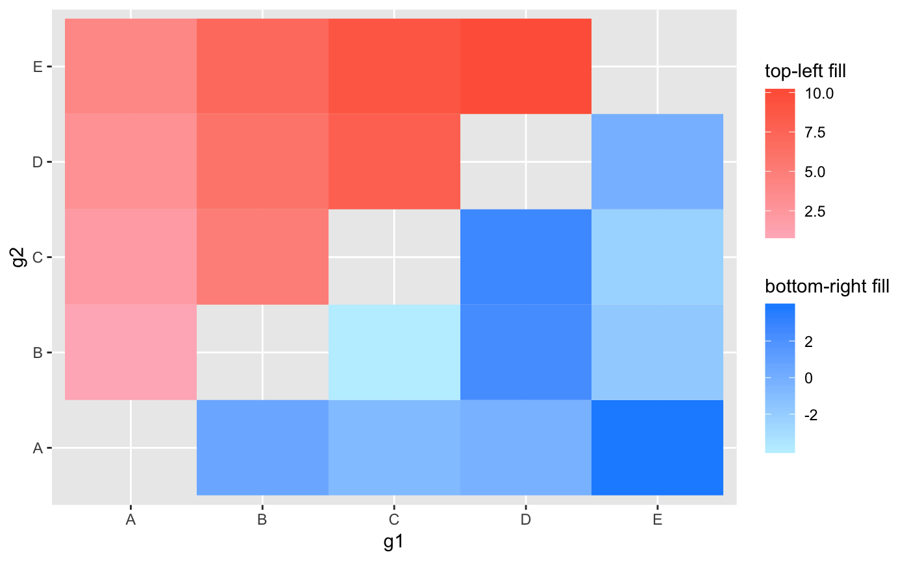

ggasym (pronounced “gg-awesome”) is a package that offers a new geom, geom_asymmat (for “asymmetric matrix”), for the plotting of two fill or color aesthetics on a symmetric matrix. This is likely to be of most use for multi-way statistical tests of multiple groups. Thus, a matrix can be formed of each group along the x and y-axes and the top-left and bottom-right triangles can be filled for the difference in mean values and p-values respectively.
Below, I begin with a simple example to show how easy geom_asymmat is to use for anyone familiar with ggplot2. In another vignette (in progress), I show how the results from a multi-way statistical test can be displayed using ggasym and the wrapper function [insert name of stats test wrapper function here].
For information on using ggplot2, start here.
tib is a simple tibble object showing two values, val_1 and val_2, for each comparison of the three groups “A”, “B”, and “C”.
tib <- tibble(g1 = c("A", "A", "B"),
g2 = c("B", "C", "C"),
val_1 = c(1, 2, 3),
val_2 = c(-1, 0, 1))
tib
#> # A tibble: 3 x 4
#> g1 g2 val_1 val_2
#> <chr> <chr> <dbl> <dbl>
#> 1 A B 1 -1
#> 2 A C 2 0
#> 3 B C 3 1This data is then plotted with two different fill values, one for the top-left (tl) triangle and the other for the bottom-right (br) triangle. To demonstrate the complete incorporation of normal ggplot2 conventions, the labels for the color scales can be declared like normal using the labs function.
ggplot(tib) +
geom_asymmat(aes(x = g1, y = g2, fill_tl = val_1, fill_br = val_2)) +
scale_fill_br_gradient(low = "lightblue1", high = "dodgerblue") +
scale_fill_tl_gradient(low = "lightpink", high = "tomato") +
labs(fill_tl = "top-left fill", fill_br = "bottom-right fill")
TODO: show off the other scale features.